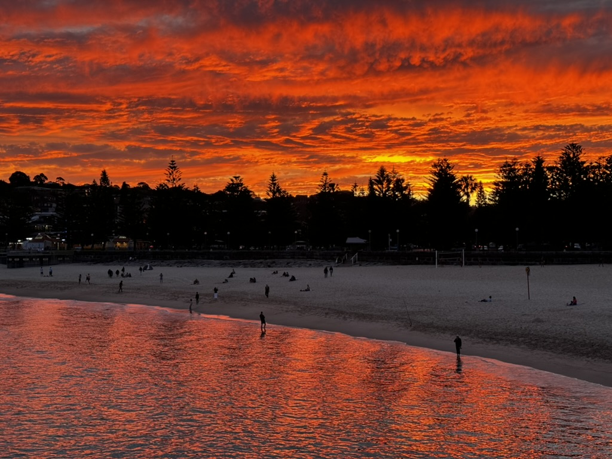
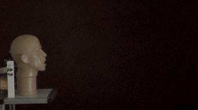

Hi, I'm Walt Wang
I'm a passionate postgraduate researcher and engineer at UNSW
in turbulent and energy.

I'm a passionate postgraduate researcher and engineer at UNSW
in turbulent and energy.
Hello, I'm Walt—a dedicated researcher and engineer with a passion for fluid dynamics and respiratory exhalations. My work focuses on understanding the intricacies of how people cough, using scientific methods to uncover new insights. Outside of my professional life, I enjoy photography, cycling, and exploring the mountains. Whether it's capturing the perfect landscape photo or embarking on a challenging hike, I am always seeking new adventures.
After work, I usually take a walk to Coogee Beach. I captured this photo by chance in August 2024, and views like this always inspire me to delve deeper into the mysteries of the universe.
And some of my work holds a beauty equal to nature’s wonders—the beauty of unknown knowledge waiting to be discovered...

This is how a cough flow moves. Isn't it beautiful?
Here are some of the projects I have worked on during my MPhil research from 2023 to 2025 at UNSW Sydney. A major project: "Design and Characterisation of a Cough Simulator" was spited into three small projects: human coughs measurement, cough modelling, and cough simulator design.
In 2024, I tested the coughs of 12 volunteers (11 male, 1 female) for flow rate and particulate matter measurement. The figure below shows that a human cough is being captured using Particle Image Velocimetry (PIV), with a high-speed camera recording 1500 frames in 1.5 seconds.

The measured flow rate as a function of time of 36 coughs (grey) and the average cough (blue) are also shown. Look at grey lines, human coughs are so different from each other!

To better understand human coughs and assist in designing the cough simulator, I developed a mathematical model on MATLAB to replicate actual human cough measurements and determine the correct input for the simulator. The figure shows that the model achieves high accuracy after being tuned to match a cough from the well-known study by Gupta et al. (2009).

Moreover, the model can be tuned to match other measured human coughs. The blue one is the mean human cough we just got, and the black one is an example target human cough.


Over two years hard work, I introduced a tunable cough simulator, the first in the history, capable of replicating coughs with precise flow rates and particulate matter size distribution for various human subjects. The simulator is powered by a motor (F) with an adjustable disk (I) and spring (J). The disk size alters the bellows extension distance, simulating lung behavior, while different springs adjust the cough strength, representing muscle force.

This work, presented by me at the Australasian Fluid Mechanics Conference (AFMC) 2024, had a significant impact on the public.
The detail of the whole study can be found in my thesis, which is available upon request.
This work was published at the Australasian Fluid Mechanics Conference (AFMC) 2024. A journal paper is currently in preparation and will be published soon.
Design and Characterisation of a Cough Simulator
Zhou Wang, Prateek Bahl, David Treck, Raina MacIntyre, Con Doolan, Charitha de Silva
I have received several fascinating awards, particularly during my undergraduate studies in Taiwan. In 2022, I designed a smart city mapping system using MEMS sensors to detect human activities and algorithms to monitor city activity. This project was presented by me in Taipei in front of entrepreneurs and government officials. Fortunately, I was the winner of the Keelung Hackathon, competing against 50 teams, and was honored by Lin Yu-chang (林右昌 Youchang LIN), the Mayor of Keelung. Here are my award certificates, and I'm glad to share this joy with you.
If you would like to get in touch, feel free to reach out and have a chat.